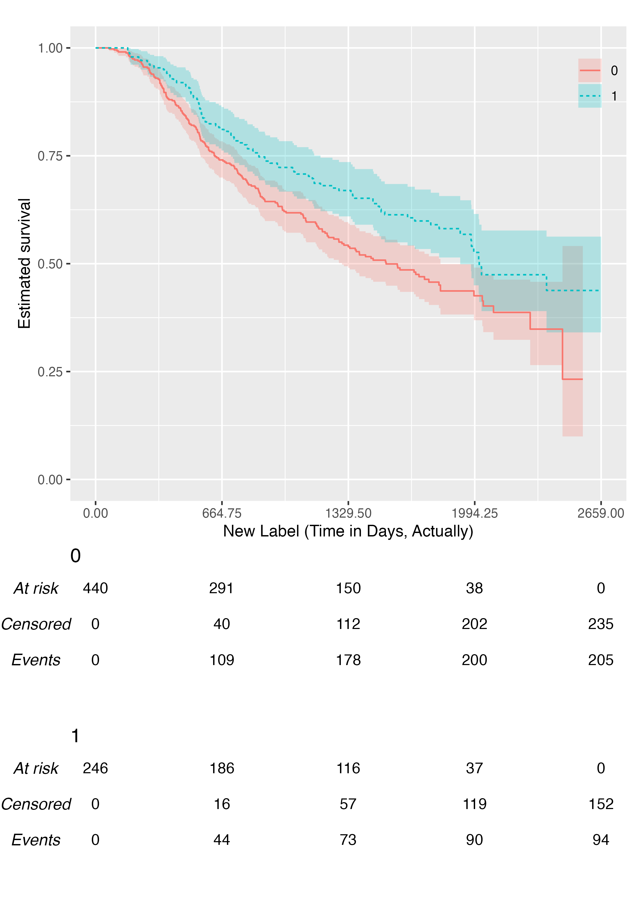
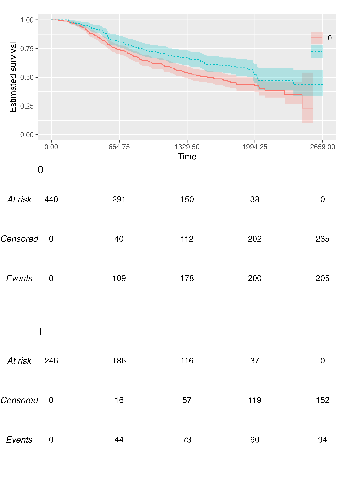

The {KMunicate} package can be used to produce Kaplan-Meier plots in the style recommended following the KMunicate study by TP Morris et al. (2019).
In this vignette, we’ll see learn how to produce such a plot using the {KMunicate} package.
Data
We will be using the brcancer dataset, which comes bundled with {KMunicate}:
data("brcancer", package = "KMunicate") str(brcancer) #> Classes 'tbl_df', 'tbl' and 'data.frame': 686 obs. of 14 variables: #> $ id : num 1 2 3 4 5 6 7 8 9 10 ... #> ..- attr(*, "format.stata")= chr "%8.0g" #> $ hormon : num 0 1 1 1 0 0 1 0 0 0 ... #> ..- attr(*, "label")= chr "hormonal therapy" #> ..- attr(*, "format.stata")= chr "%8.0g" #> $ x1 : num 70 56 58 59 73 32 59 65 80 66 ... #> ..- attr(*, "label")= chr "age, years" #> ..- attr(*, "format.stata")= chr "%8.0g" #> $ x2 : num 2 2 2 2 2 1 2 2 2 2 ... #> ..- attr(*, "label")= chr "menopausal status" #> ..- attr(*, "format.stata")= chr "%8.0g" #> $ x3 : num 21 12 35 17 35 57 8 16 39 18 ... #> ..- attr(*, "label")= chr "tumour size, mm" #> ..- attr(*, "format.stata")= chr "%8.0g" #> $ x4 : num 2 2 2 2 2 3 2 2 2 2 ... #> ..- attr(*, "label")= chr "tumour grade" #> ..- attr(*, "format.stata")= chr "%8.0g" #> $ x5 : num 3 7 9 4 1 24 2 1 30 7 ... #> ..- attr(*, "label")= chr "number of positive nodes" #> ..- attr(*, "format.stata")= chr "%8.0g" #> $ x6 : num 48 61 52 60 26 0 181 192 0 0 ... #> ..- attr(*, "label")= chr "progesterone receptor, fmol" #> ..- attr(*, "format.stata")= chr "%8.0g" #> $ x7 : num 66 77 271 29 65 13 0 25 59 3 ... #> ..- attr(*, "label")= chr "estrogen receptor, fmol" #> ..- attr(*, "format.stata")= chr "%8.0g" #> $ rectime: num 1814 2018 712 1807 772 ... #> ..- attr(*, "label")= chr "recurrence free survival time, " #> ..- attr(*, "format.stata")= chr "%8.0g" #> $ censrec: num 1 1 1 1 1 1 0 0 1 0 ... #> ..- attr(*, "label")= chr "censoring indicator" #> ..- attr(*, "format.stata")= chr "%8.0g" #> $ x4a : num 1 1 1 1 1 1 1 1 1 1 ... #> ..- attr(*, "label")= chr "tumour grade>=2" #> ..- attr(*, "format.stata")= chr "%8.0g" #> $ x4b : num 0 0 0 0 0 1 0 0 0 0 ... #> ..- attr(*, "label")= chr "tumour grade==3" #> ..- attr(*, "format.stata")= chr "%8.0g" #> $ x5e : num 0.698 0.432 0.34 0.619 0.887 ... #> ..- attr(*, "label")= chr "exp(-0.12*x5)" #> ..- attr(*, "format.stata")= chr "%9.0g" #> - attr(*, "label")= chr "German breast cancer data"
Single-Arm Plot
We start by creating a KMunicate-style plot for all study subjects. First, we load the package:
library(KMunicate) #> Loading required package: survival
Then, we fit a Kaplan-Meier curve using the survfit function from the {survival} package:
fit <- survfit(Surv(rectime, censrec) ~ 1, data = brcancer) fit #> Call: survfit(formula = Surv(rectime, censrec) ~ 1, data = brcancer) #> #> n events median 0.95LCL 0.95UCL #> 686 299 1807 1587 2030
Then, we need to define the horizontal axis of the plot. For instance, we can define 5 equally-spaced breaks between time zero and the largest observed time:
Finally, we can pass fit and ts to the KMunicate() function to simply obtain a plot:
KMunicate(fit = fit, time_scale = ts)

Multiple-Arms Plot
A multiple-arms plot will be automatically produced if the survfit object has covariates in it. For instance, if we fit the Kaplan-Meier estimator by treatment arm:
fit2 <- survfit(Surv(rectime, censrec) ~ hormon, data = brcancer) fit2 #> Call: survfit(formula = Surv(rectime, censrec) ~ hormon, data = brcancer) #> #> n events median 0.95LCL 0.95UCL #> hormon=0 440 205 1528 1296 1814 #> hormon=1 246 94 2018 1918 NA
We will be using the same time scale as before (ts), and the call to KMunicate() is analogous:
KMunicate(fit = fit2, time_scale = ts)

Customisation
The KMunicate() function contains a few options to customise the produced plot. First, we can pass a ggplot2 theme to the .theme argument:
KMunicate(fit = fit2, time_scale = ts, .theme = ggplot2::theme_minimal())

We can also pass custom colour (and fill) scales:
KMunicate( fit = fit2, time_scale = ts, .color_scale = ggplot2::scale_color_brewer(type = "qual", palette = "Set2"), .fill_scale = ggplot2::scale_fill_brewer(type = "qual", palette = "Set2") )

We can customise the transparency of the point-wise confidence intervals via the .alpha argument:
KMunicate(fit = fit2, time_scale = ts, .alpha = 0.1)
We can customise the label of the horizontal axis:
KMunicate(fit = fit2, time_scale = ts, .xlab = "New Label (Time in Days, Actually)")

We can customise the relative size of risk tables and plots, although the default should generally work fine for most scenarios:

Finally, assuming you have set up your computer and R session to support custom fonts, you can produce plots with custom fonts:
KMunicate(fit = fit2, time_scale = ts, .ff = "Times New Roman")
A Better Plot
We can combine all the above to obtain an (arguably) much better plot:
KMunicate( fit = fit2, time_scale = ts, .theme = ggplot2::theme_minimal(base_family = "Roboto Condensed"), .xlab = "Time (in days)", .color_scale = ggplot2::scale_color_brewer(type = "qual", palette = "Set2"), .fill_scale = ggplot2::scale_fill_brewer(type = "qual", palette = "Set2"), .ff = "Roboto Condensed" )